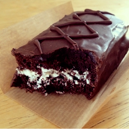
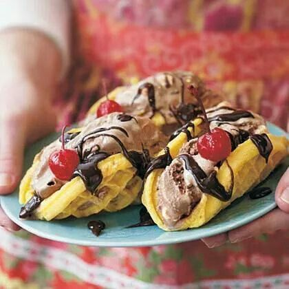
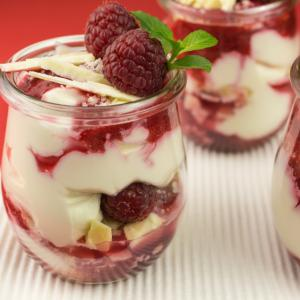

Recetas de postres deliciosos
Home
Privacy policy
Terms and Conditions
Photo gallery
Contacts
Posted by
Someone
2021.06.26 13:29 •
Comments (64)
•
Full article

<div class="mc_vtvc_th b_canvas"><div class="cico" style="width:234px;height:131px;"><div class="rms_iac" style="height:131px;line-height:131px;width:234px;" data-height="131" data-width="234" data-alt="27 DELICIOSAS RECETAS DE CHOCOLATE || Ideas de decoración de chocolate DIY para postres y pasteles" data-role="presentation" data-class="rms_img" data-src="https://tse1.mm.bing.net/th?id=OVP.1_RhRBS0ye4a59ww4WX3LQHgFo" frameborder="0" allow="accelerometer; autoplay; encrypted-media; gyroscope; picture-in-picture" allowfullscreen>

Blog
About
Categories
720 ideas de Postres en 2021 | postres, recetas dulces, postre
430 ideas de POSTRES FACILES en 2021 | recetas dulces .
Recetas de Postres - Kiwilimón
Recetas de postres y dulces , caseras y fáciles- De Rechupete
Recetas de Postres: deliciosas tartas, helados y pasteles .
Los 40 postres más famosos del mundo que tienes que comer .
71 recetas de postres fáciles y rápidos - Directo al Paladar
Recetas de Postres | Tastemade
Postres deliciosos para hacer en casa | Demos la vuelta al día
Postres de Locura - Recetas de postres deliciosos y fáciles
Photo #1

Menu
720 ideas de Postres en 2021 | postres, recetas dulces, postre
430 ideas de POSTRES FACILES en 2021 | recetas dulces .
Recetas de Postres - Kiwilimón
Recetas de postres y dulces , caseras y fáciles- De Rechupete
Recetas de Postres: deliciosas tartas, helados y pasteles .
Los 40 postres más famosos del mundo que tienes que comer .
71 recetas de postres fáciles y rápidos - Directo al Paladar
Recetas de Postres | Tastemade
Postres deliciosos para hacer en casa | Demos la vuelta al día
Postres de Locura - Recetas de postres deliciosos y fáciles